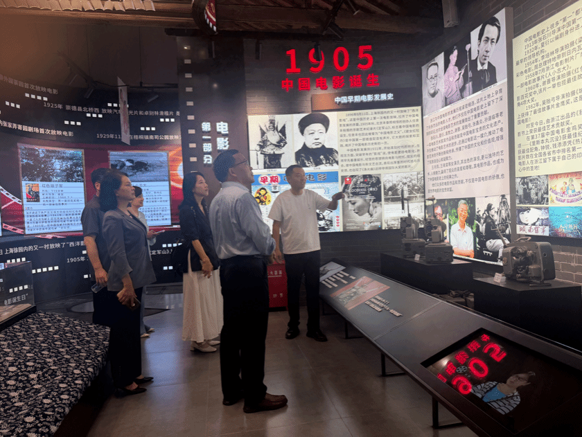

驻村现场从现场进入乡村服务文化特派员工作从村庄现场、地方对接和实地理解开始。
这里介绍参与马鸣村文化整理与传播的研究者。她以文化特派员身份进入乡村，用影像、图像、访谈和艺术传播的方法，记录马鸣村的桑蚕丝织记忆、村落空间和蚕丝被故事。
研究者的工作从具体的村庄空间开始：水网、老街、影像记忆和手工产业共同构成她观察马鸣村的现场。


她关注桑蚕丝织技艺与宋韵文脉、乡村影像叙事、数字媒体艺术、AIGC影像生成、公共美育和研究影响。围绕桐乡马鸣村，她尝试把村落空间、桑蚕丝织记忆、手工蚕丝被和地方故事整理成可以被观看、阅读和传播的内容。
据浙江传媒大学设计艺术学院教师介绍页面，丁瑶瑶为戏剧影视学博士，现任教于浙江传媒大学设计艺术学院摄影系，主要教授《融媒体创作》《摄影技术与技巧》《手机摄影》等课程，研究方向包括融媒体研究、艺术与科学研究、文化产业研究。
文化特派员的工作不只是写文章，也包括进入现场、访问人物、拍摄影像、整理物件、设计展陈和参与地方文化活动。这个页面记录的正是这种“走进乡村、理解乡村、讲述乡村”的过程。
研究者的工作可以理解为三件事：走进现场、记录影像、把地方文化转化为可以被更多人理解的内容。
围绕村落空间、桑蚕丝织记忆、手工蚕丝被、节庆民俗和乡村特色产品现场开展调研。
以摄影、摄像、访谈和声音记录形成地方文化影像档案，为论文和展陈提供材料。
把观察到的内容转化为文章、图像、展陈、课程、短视频脚本和乡村文化活动。